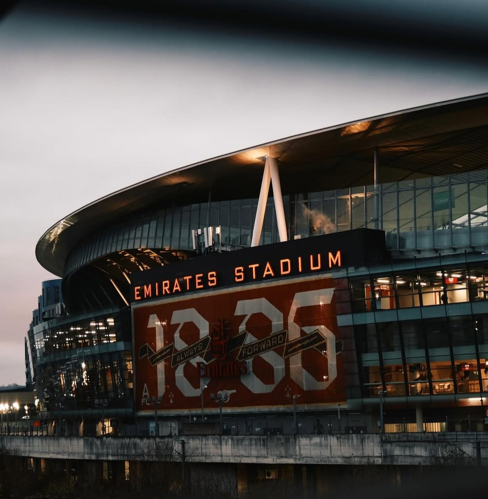
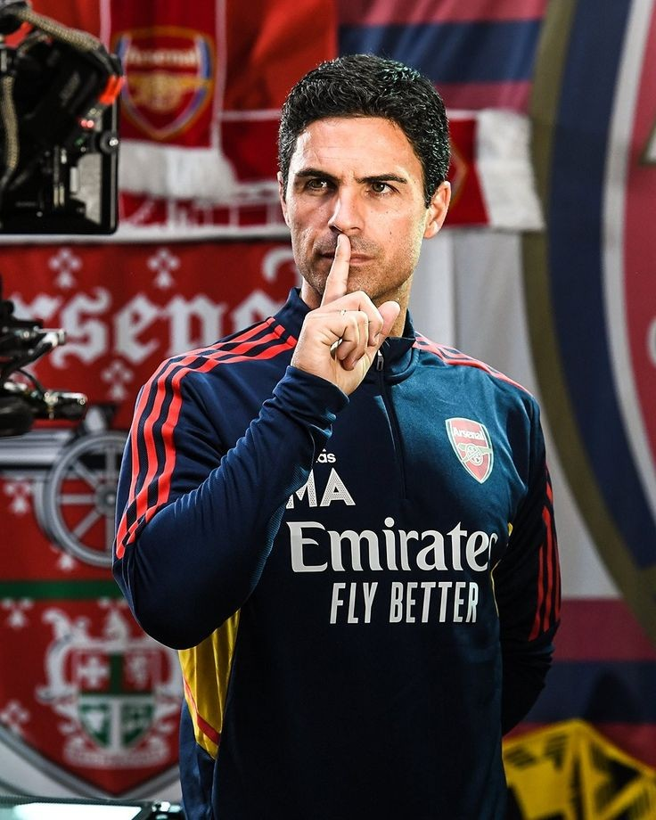

Club Overview
Arsenal Football Club, often referred to as Arsenal or The Gunners, is a professional football club based in Islington, London, England. Founded in 1886 as Dial Square, the club plays in the Premier League, the top flight of English football.
A Brief History
From their roots in Woolwich to their move to Highbury and then the Emirates, Arsenal's journey is filled with iconic moments and legendary figures. Key moments include the "Invincibles" season of 2003-04 and numerous FA Cup victories.
Key Players
Bukayo Saka
Martin Ødegaard
Gabriel Martinelli
Coach Information
Our current manager is Mikel Arteta. He is a former Arsenal player and has been leading the team since December 2019.
Achievements
Arsenal has a rich history of success, including numerous league titles and FA Cup wins. Notable achievements include the "Invincibles" season of 2003-04.